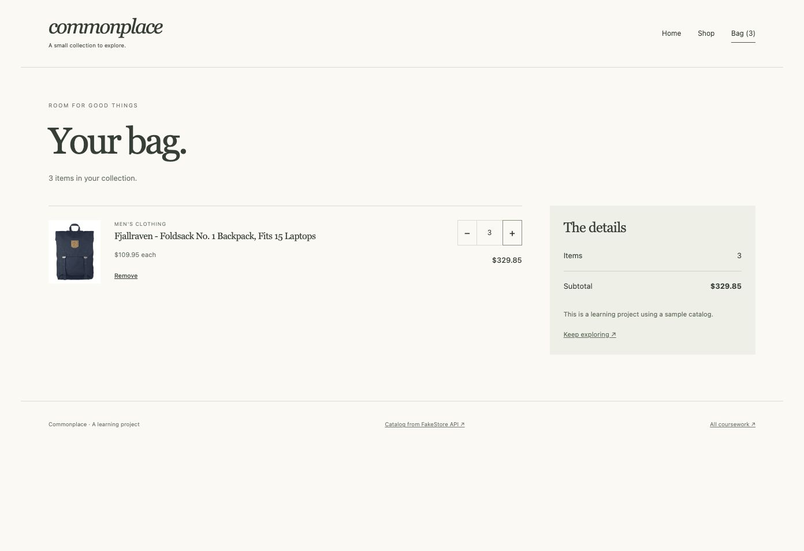

Selected web projects
Selected work
Coursework record
Class activities
Dates below are the dates recorded in the existing coursework evidence or presentation materials. This archive was updated on 24 November 2026 for Task 11.11.2026.
| Evidence date | Practical task | Course | Materials |
|---|---|---|---|
| Sign-up Form | Intermediate HTML and CSS | SourceProject PDF | |
| Admin Dashboard | Intermediate HTML and CSS | SourceProject PDF | |
| Library | JavaScript | SourceProject PDF | |
| Tic Tac Toe | JavaScript | SourceProject PDF | |
| Restaurant Page | JavaScript | SourceProject PDF | |
| Todo List | JavaScript | SourceProject PDF | |
| Battleship | JavaScript | SourceProject PDF | |
| Weather App | JavaScript | SourceProject PDF | |
| Testing Practice | JavaScript | SourceProject PDF | |
| Recursion | JavaScript | SourceProject PDF | |
| Linked Lists | JavaScript | SourceProject PDF | |
| HashMap | JavaScript | SourceProject PDF | |
| Binary Search Trees | JavaScript | SourceProject PDF | |
| Knights Travails | JavaScript | SourceProject PDF | |
| Homepage | Advanced HTML and CSS | SourceProject PDF | |
| CV Application | React | SourceProject PDF | |
| Memory Card | React | SourceProject PDF | |
| Shopping Cart | React | SourceProject PDF | |
| SQL | Databases | SourceProject PDF | |
| Basic Informational Site | NodeJS | SourceProject PDF | |
| Mini Message Board | NodeJS | SourceProject PDF | |
| Inventory Application | NodeJS | SourceProject PDF | |
| Members Only | NodeJS | SourceProject PDF | |
| File Uploader | NodeJS | SourceProject PDF | |
| Blog API | NodeJS | SourceProject PDF | |
| Where’s Waldo | NodeJS | SourceProject PDF | |
| Messaging App | NodeJS | SourceProject PDF | |
| Odin-Book | NodeJS | SourceProject PDF | |
| Building Your Personal Website | Getting Hired | SourceProject PDF | |
| Building Your Resume | Getting Hired | SourceProject PDF | |
| Rock Paper Scissors | Foundations / JavaScript Basics | SourceProject PDF | |
| Etch-a-Sketch | Foundations / JavaScript Basics | SourceProject PDF | |
| Calculator | Foundations / JavaScript Basics | SourceProject PDF | |
| Sign-up Form presentation | Presentation and narration | Video | |
| Laboratory 01: Model profiling | Generative AI Applications | Code, output and answers | |
| Laboratory 02: Structured output | Generative AI Applications | Code, output and answers | |
| Practice 01: Retrieval evaluation | Generative AI Applications | Code, output and answers | |
| Practice 02: RAG evaluation | Generative AI Applications | Code, output and answers | |
| Profile update and repository review | Task 11.11.2026 | Project proposal PDF |
39 activities
Code, output and documentation
Past projects
Thirty Full Stack JavaScript project assignments and three Foundations projects. Some assignments share an application. Each entry links to its own page in the project notes PDF.
Intermediate HTML and CSS
Sign-up Form
Semantic registration form with browser validation and matching passwords.
Intermediate HTML and CSS
Admin Dashboard
A project workspace arranged with nested CSS Grid.
JavaScript
Library
A personal library backed by a collection of book objects.
JavaScript
Tic Tac Toe
A local two-player game with an isolated rules model.
JavaScript
Restaurant Page
A restaurant website assembled from JavaScript view modules.
JavaScript
Todo List
Tasks organised into projects, with priorities and persistent browser storage.
JavaScript
Battleship
A browser game with fleet placement and computer turns.
JavaScript
Weather App
A forecast interface using visitor-supplied Visual Crossing credentials.
JavaScript
Testing Practice
A set of small JavaScript utilities with behaviour-focused tests.
JavaScript
Recursion
Fibonacci and merge sort exercises with separate demonstration drivers.
JavaScript
Linked Lists
A linked list built from nodes containing a value and a next reference.
JavaScript
HashMap
A key-value collection using hashed buckets and collision handling.
JavaScript
Binary Search Trees
A binary search tree with construction, mutation and traversal methods.
JavaScript
Knights Travails
A shortest-path search for a knight moving on a chessboard.
Advanced HTML and CSS
Homepage
A responsive personal portfolio with project previews and source links.
React
CV Application
A React CV editor with controlled fields and a document preview.
React
Memory Card
A React memory game that uses a public card API.
React
Shopping Cart
A React catalog with routed pages and a persistent shopping bag.
Databases
SQL
SQL Teaching, SQLBolt and SQLZoo query exercises.
NodeJS
Basic Informational Site
A small server-rendered informational website.
NodeJS
Mini Message Board
A message board with server-rendered forms and PostgreSQL storage.
NodeJS
Inventory Application
An inventory application for categories and items.
NodeJS
Members Only
A membership-based message application.
NodeJS
File Uploader
A file management application with private folders.
NodeJS
Blog API
A REST API with separate reader and author interfaces.
NodeJS
Where’s Waldo
A character-search game with server-checked results.
NodeJS
Messaging App
A messaging interface with participant-based conversation access.
NodeJS
Odin-Book
A small social feed application.
Getting Hired
Building Your Personal Website
A public website that brings together biography and coursework.
Getting Hired
Building Your Resume
A one-page resume with an accessible HTML version.
Foundations / JavaScript Basics
Rock Paper Scissors
A game with separate rules and interface modules.
Foundations / JavaScript Basics
Etch-a-Sketch
A resizable drawing grid created with JavaScript and Flexbox.
Foundations / JavaScript Basics
Calculator
A calculator with explicit operations and sequential evaluation.
33 project assignments
The Odin Project
Courses and practical work
Course presentations, practical files and available narrated videos. Recordings with my own voice will be added separately.
The Odin Project
Intermediate HTML and CSS
Semantic HTML, forms, selectors, web fonts, SVG, tables and CSS Grid.
English narrated presentation. A screen recording with my own voice is still to be added.
Course details awaiting confirmation
Open Course
The assignment uses this title without a course link. I will add the course overview, practical work and recording after the exact course is confirmed.
Foundations / JavaScript Basics is listed separately below.
The Odin Project
JavaScript
Objects, modules, DOM events, asynchronous requests, algorithms and testing.
English narrated presentation. A screen recording with my own voice is still to be added.
The Odin Project
Advanced HTML and CSS
Transitions, transforms, keyframes, responsive design and accessible navigation.
Own-voice screen recording to be added.
Additional completed section
Foundations / JavaScript Basics
The evidence from 25 October 2026 records completion of all fifteen items in this section. Rock Paper Scissors, Etch-a-Sketch and Calculator have separate GitHub repositories.
English narrated presentation. A screen recording with my own voice is still to be added.
Generative Artificial Intelligence Applications
Homework
Four completed notebooks from the 4 November coursework package. Links include code, saved output and the report containing the methods, answers and limitations. Execution used the local CPU track.
Laboratory 01 / 4 Nov 2026
Model profiling
Five model profiles, quantisation and size comparisons, parallel serving and a model card.
Laboratory 02 / 4 Nov 2026
Structured output
Three extraction strategies on fifteen incidents, repeated with a smaller model.
Practice 01 / 4 Nov 2026
Retrieval evaluation
Six retrieval configurations on twenty-five incidents, including the weakest cases.
Practice 02 / 4 Nov 2026
RAG evaluation
Baseline, RAG and one controlled improvement on twelve CPU-track incidents, with judge review.
Task 11.11.2026 / Project proposal
Runbook Navigator
An incident assistant that shows the instructions behind its answer.
I propose a web application for investigating fictional technical incidents with approved runbooks. It will retrieve relevant passages, draft a structured response and show the source and document version for each recommendation. A human reviews the result before export.
Planned first version
Incident input, keyword and vector retrieval, structured answers, citation validation and a review screen. The application will report insufficient evidence when the documents do not support an answer. It will use fictional classroom data and will not execute production actions.
Status: proposed application. The proposal describes a planned implementation and acceptance targets.
Repository review
I reviewed the public documentation of the seven repositories below on 24 November 2026. The proposal explains the useful ideas and the limits of reusing each approach.
| Repository | What it contains | How it informs my idea |
|---|---|---|
| awesome-llm-apps | A collection of agent and RAG application examples, including local and hybrid retrieval patterns. | Use the RAG examples to compare retrieval, prompting and source presentation in a small end-to-end application. |
| Awesome-LLM | A curated index of LLM papers, models, evaluation resources, frameworks and learning material. | Use it to justify model and evaluation choices in the proposal. |
| ai-employees | Scheduled business-role routines organised as files for use with existing agent tools. | Adapt the idea of a repeatable workflow, a run log and a clear review step. |
| markus | A self-hosted platform that splits goals into agent tasks and tracks work and review. | Borrow explicit task state and a reviewer gate, while keeping the student MVP to a small sequential pipeline. |
| STORM | A knowledge-curation system that gathers references and outlines a topic before writing a cited report. | Separate evidence collection from answer generation and keep references visible beside the answer. |
| novel-agent | A novel-writing system with specialised stages for planning, drafting, review and continuity. | Apply staged validation and persistent project state to incident reports. |
| Claude-Book | A framework that separates enduring story references, transient chapter state and writing stages. | Keep versioned runbooks separate from the current incident notes and retain checkpoints. |